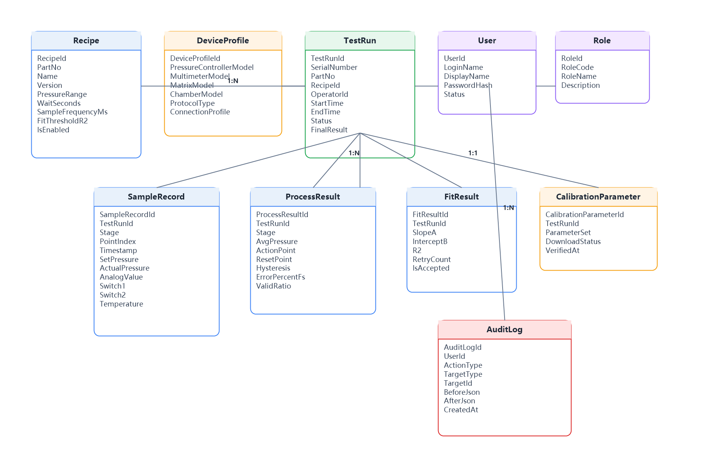
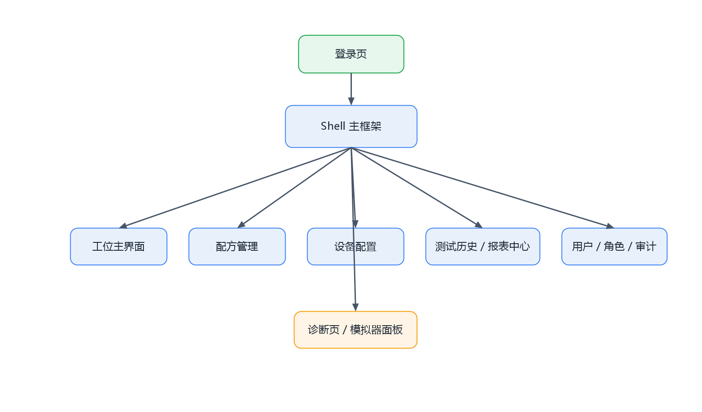
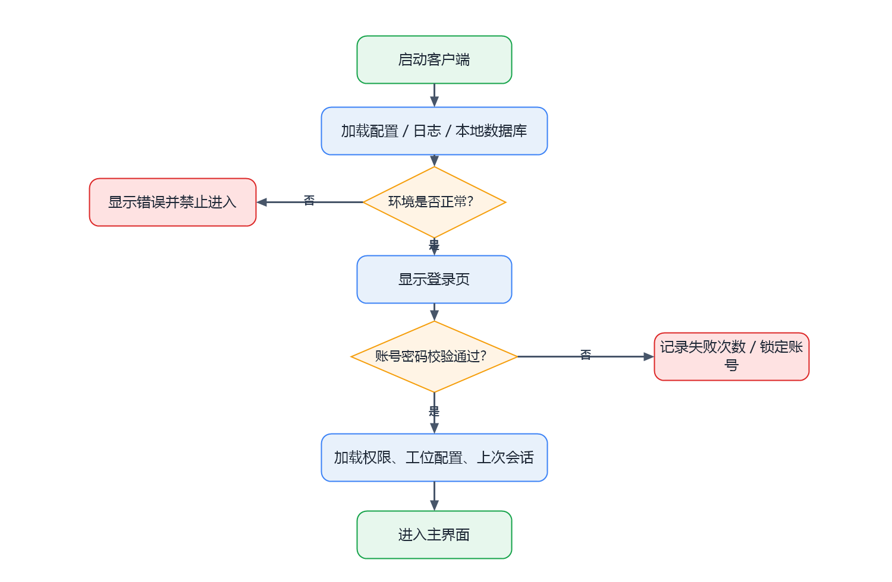
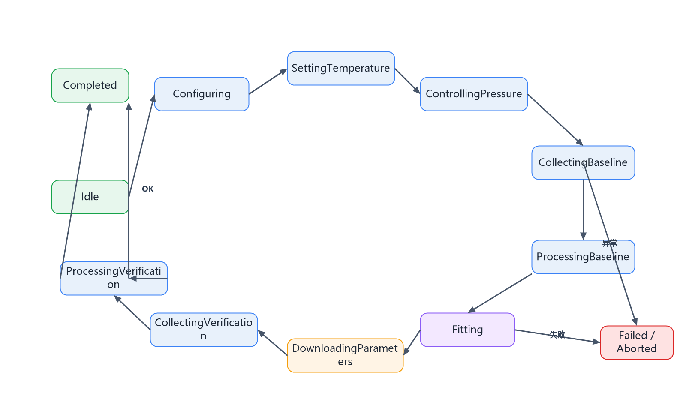
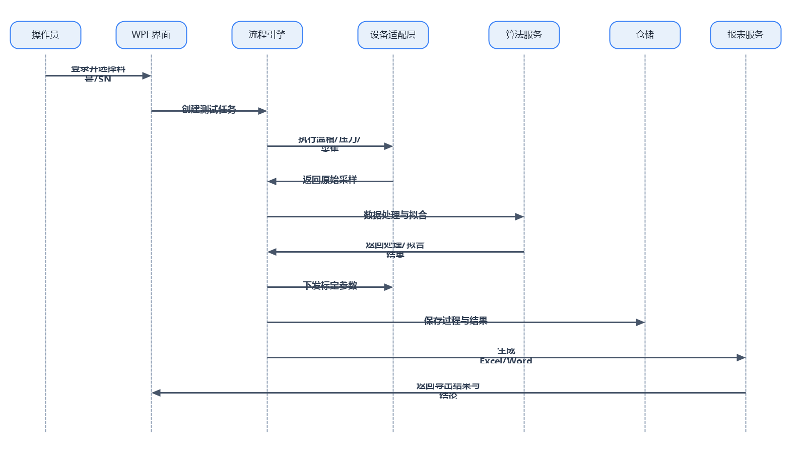
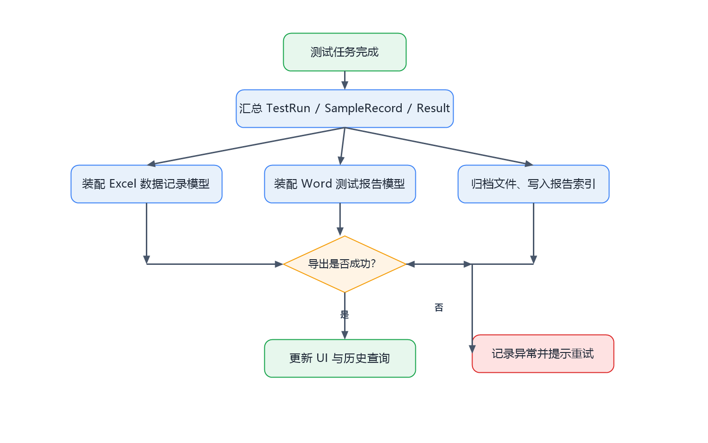

图 6-2 标定闭环流程图
1 引言
2 开发技术基线与解决方案结构
3 项目分层与项目职责
4 领域模型设计
5 页面与交互设计
6 流程状态机设计
7 设备抽象与适配器设计
8 持久化设计
9 账号、权限与审计设计
10 报表设计
11 日志、异常与告警设计
12 模拟器设计
13 测试与验收设计
本文档在概要设计基础上继续下钻，给出 PT.Calibration 首版直接可开发的模块边界、接口契约、数据模型、页面方案、状态流转、异常规则和测试方案，作为编码实现与评审验收的依据。
| 类别 | 选型 | 说明 |
|---|---|---|
| 框架 | .NET 8 + WPF | 桌面客户端技术基线。 |
| 架构模式 | MVVM + Host + DI | 统一 ViewModel 生命周期、配置和日志。 |
| 数据访问 | EF Core 8 + SQLite | 本地结构化存储，支持迁移和查询。 |
| 日志 | Serilog | 分文件记录运行、设备、异常和审计日志。 |
| 报表 | ClosedXML + Open XML SDK | 生成 Excel 和 Word，不依赖 Office。 |
| UI 工具 | CommunityToolkit.Mvvm | 简化属性通知、命令和消息机制。 |
| 项目 | 类型 | 职责 |
|---|---|---|
| PT.Calibration | WPF | 应用启动、Shell、页面、ViewModel、导航和交互层。 |
| PT.Calibration.Application | Class Library | 用例服务、流程编排、权限校验、报表调度、应用级 DTO。 |
| PT.Calibration.Domain | Class Library | 实体、值对象、枚举、状态机、接口和领域规则。 |
| PT.Calibration.Infrastructure | Class Library | EF Core、SQLite、驱动适配器、文件存储、哈希、日志实现。 |
| PT.Calibration.Simulator | Class Library | 压力、温箱、采样、通信异常和泄漏等模拟实现。 |
| PT.Calibration.Tests | Test Project | 单元测试、集成测试、流程验收测试。 |
依赖必须沿“WPF → Application → Domain ← Infrastructure / Simulator”方向流动。UI 不得直接引用 EF Core 上下文或设备驱动实现，所有外部交互必须通过服务接口进入应用层。
| 层 | 必须实现 | 禁止实现 |
|---|---|---|
| UI | 页面、ViewModel、导航、输入校验、实时展示、权限可见性控制。 | 设备协议拼装、SQL 拼接、业务判定。 |
| Application | 测试任务编排、命令处理、异常翻译、权限检查、报表导出入口。 | 数据库物理访问细节、页面控件逻辑。 |
| Domain | 实体、状态、规则、接口、异常、算法契约。 | 日志框架、文件系统和第三方 UI 框架依赖。 |
| Infrastructure | 仓储、设备适配器、导出器、哈希、持久化与日志。 | 硬编码业务流程和 UI 依赖。 |
核心数据对象围绕 Recipe、TestRun 和过程记录展开，既要覆盖主数据，也要完整保存采样、处理、拟合和下发结果。

| 实体 | 关键字段 | 用途说明 |
|---|---|---|
| Recipe | RecipeId、PartNo、Version、PressureRange、WaitSeconds、SampleFrequencyMs、FitThresholdR2 | 定义测试参数，是启动任务前的唯一模板来源。 |
| TestRun | TestRunId、SerialNumber、PartNo、OperatorId、StartTime、EndTime、Status、FinalResult | 代表一次完整标定任务，承载全流程生命周期。 |
| SampleRecord | Stage、PointIndex、Timestamp、SetPressure、ActualPressure、AnalogValue、Switch1、Switch2、Temperature | 保存原始采样点，用于处理、追溯和 CSV/Excel 输出。 |
| ProcessResult | AvgPressure、ActionPoint、ResetPoint、Hysteresis、ErrorPercentFs、ValidRatio | 保存每轮处理后的核心计算结果。 |
| FitResult | SlopeA、InterceptB、R2、RetryCount、IsAccepted | 保存最小二乘拟合结果和重试信息。 |
| CalibrationParameter | ParameterSet、DownloadStatus、VerifiedAt | 保存待下发和已生效的标定参数。 |
| User / Role | LoginName、PasswordHash、RoleCode | 实现本地登录、权限矩阵和审计归属。 |
| AuditLog | ActionType、TargetType、BeforeJson、AfterJson、CreatedAt | 记录关键动作及前后变更。 |
| 字段组 | 字段示例 | 设计说明 |
|---|---|---|
| 基本信息 | PartNo、Name、Version、Description、IsEnabled | 支持按料号管理，内部保留版本号用于追溯。 |
| 压力参数 | RangeMin、RangeMax、StepPercentFs、LeakThreshold、StabilizeTolerance | 定义压力控制和稳定判断边界。 |
| 采样参数 | WaitSeconds、SampleDurationSeconds、SampleFrequencyMs、InvalidDataThreshold | 控制采样节奏与无效数据判定。 |
| 温度参数 | TemperaturePoints、TemperatureTolerance、StableSeconds | 定义温箱目标点和稳定策略。 |
| 判定参数 | FitThresholdR2、ErrorTolerancePercentFs、RetryLimit | 定义拟合通过与 NG 判定规则。 |
| 通道映射 | PowerChannel、AnalogChannel、Switch1Channel、Switch2Channel、SerialChannel | 绑定切换矩阵和 DUT 通道。 |
页面导航采用单 Shell 承载多业务页的方式，登录成功后进入主框架，根据权限决定菜单可见性和操作可用性。

| 页面 | 主要用户 | 核心区域 | 关键动作 |
|---|---|---|---|
| 登录页 | 全部 | 账号、密码、登录结果、版本信息 | 登录、退出、锁定提示 |
| 工位主界面 | Operator / Engineer | 配方选择、SN 输入、设备状态、实时数据、流程进度、告警、结论 | 启动、停止、确认告警、导出当前报表 |
| 配方管理 | Engineer / Admin | 料号列表、配方编辑、版本启停、参数表单 | 新增、复制、编辑、启用、停用 |
| 设备配置 | Engineer / Admin | 设备档案、连接参数、通道映射、协议类型 | 保存、测试连接、切换模拟器 |
| 历史查询 / 报表中心 | 全部（受权限控制） | 筛选条件、任务列表、详情抽屉、报表列表 | 查看、复打、导出 |
| 用户 / 角色 / 审计 | Admin | 用户表、角色矩阵、审计筛选 | 新增用户、改密、授权、查看审计 |
| 诊断页 / 模拟器面板 | Engineer / Admin | 设备通信日志、模拟器场景开关、连接自检 | 模拟故障、查看报文摘要、清理缓存 |

客户端启动时先完成基础环境装配，只有配置、日志和数据库均可用时才允许进入登录页。登录失败需累计失败次数并支持锁定策略。
闭环流程是整个系统的主业务脊柱，应用层流程引擎必须完整实现其中每一步，并以状态机驱动而非页面按钮串行调用。

| 状态 | 进入条件 | 退出条件 | 失败转移 |
|---|---|---|---|
| Idle | 应用已登录，无进行中任务 | 操作员启动任务 | - |
| Configuring | 收到启动命令 | 配方与设备快照生成成功 | 配置非法 → Failed |
| SettingTemperature | 温度点已确定 | 温箱达到稳定要求 | 超时 / 通信失败 → Failed |
| ControllingPressure | 进入当前压力点 | 达到稳定窗口 | 泄漏 / 超差 / 设备异常 → Failed |
| CollectingBaseline | 首轮压力稳定 | 采样时长完成并保存成功 | 无效数据超阈值 → Failed |
| ProcessingBaseline | 首轮采样完成 | 处理结果生成 | 计算异常 → Failed |
| Fitting | 首轮处理完成 | R² 与参数合法性满足条件 | 重试 3 次仍失败 → Failed |
| DownloadingParameters | 拟合通过 | 参数下发并确认成功 | 下发失败 3 次 → Failed |
| CollectingVerification | 参数已生效 | 二轮采样完成 | 采样失败 → Failed |
| ProcessingVerification | 二轮采样完成 | 验证结果生成 | 超差 → Completed(NG) |
| Completed | 流程结束 | 报表生成并归档完成 | - |
| Failed / Aborted | 出现异常或人工终止 | 记录完成并回到 Idle | - |
| 接口 | 核心职责 | 建议操作 |
|---|---|---|
IDeviceDriverFactory | 按设备类型和配置创建驱动实例 | CreatePressureController、CreateMultimeter、CreateSwitchMatrix、CreateChamber |
IPressureController | 压力设定、读取实际压力、停止输出 | SetTargetPressureAsync、ReadPressureAsync、VentAsync、StopAsync |
IMultimeter | 读取模拟量和开关量 | ReadAnalogAsync、ReadSwitchAsync、ZeroAsync |
ISwitchMatrix | 控制电源、模拟量、开关量、串口通道 | ApplyChannelMapAsync、OpenChannelAsync、CloseAllAsync |
ITemperatureChamber | 温度设定、读取和稳定等待 | SetTargetTemperatureAsync、ReadTemperatureAsync、WaitStableAsync |
IDutParameterChannel | 下发拟合后的标定参数并验证生效 | DownloadParametersAsync、VerifyParametersAsync |
ITestWorkflowEngine | 编排完整状态机流程 | PrepareAsync、ExecuteAsync、AbortAsync、GetSnapshotAsync |
ITestSessionService | 创建、查询和恢复任务上下文 | CreateRunAsync、LoadRunAsync、CompleteRunAsync |
IRecipeService | 提供配方读写、启停、复制与校验 | ListAsync、SaveAsync、ValidateAsync、CloneAsync |
IReportService | 生成 Excel 与 Word 报表 | BuildExcelAsync、BuildWordAsync、ArchiveAsync |
IAuthService | 登录、改密、角色装载 | LoginAsync、ChangePasswordAsync、GetPermissionSetAsync |
IAuditService | 记录审计日志 | WriteAsync、QueryAsync |

时序图强调：WPF 界面不直接驱动设备，所有设备交互均由流程引擎发起，并通过仓储和报表服务形成可回放结果。
| 场景 | 策略 |
|---|---|
| 连接建立失败 | 按设备配置重试 3 次，仍失败则中止当前任务并记录异常。 |
| 命令超时 | 单次命令超时按设备类别配置，默认 3 秒；超时后重试并写设备日志。 |
| 压力稳定失败 | 在等待时间内持续监测实际压力，若偏差超限或出现泄漏则直接转 Failed。 |
| 参数下发失败 | 自动重试 3 次；每次失败都保存错误码、设备状态和参数快照。 |
TestRunId 贯穿。| 表名 | 主键 | 核心字段 | 说明 |
|---|---|---|---|
| Users | UserId | LoginName、DisplayName、PasswordHash、Status | 本地账号。 |
| Roles | RoleId | RoleCode、RoleName | 角色定义。 |
| UserRoles | UserRoleId | UserId、RoleId | 用户与角色关系。 |
| Recipes | RecipeId | PartNo、Version、PressureRange、SampleFrequencyMs、RetryLimit | 配方主表。 |
| RecipeTemperaturePoints | RecipeTemperaturePointId | RecipeId、TemperatureSetPoint、OrderNo | 温度点子表。 |
| DeviceProfiles | DeviceProfileId | ProtocolType、ConnectionProfile、ChannelBindingsJson | 设备配置。 |
| TestRuns | TestRunId | SerialNumber、RecipeId、OperatorId、Status、FinalResult | 任务主表。 |
| TestRunStages | TestRunStageId | TestRunId、StateCode、StartedAt、EndedAt、ErrorCode | 阶段追踪。 |
| SampleRecords | SampleRecordId | TestRunId、Stage、Timestamp、ActualPressure、AnalogValue | 原始采样表。 |
| ProcessResults | ProcessResultId | TestRunId、Stage、ActionPoint、Hysteresis、ErrorPercentFs | 处理结果表。 |
| FitResults | FitResultId | TestRunId、SlopeA、InterceptB、R2、RetryCount | 拟合结果表。 |
| CalibrationParameters | CalibrationParameterId | TestRunId、ParameterSetJson、DownloadStatus | 下发参数表。 |
| ReportFiles | ReportFileId | TestRunId、FileType、FilePath、CreatedAt | 报表索引。 |
| AuditLogs | AuditLogId | UserId、ActionType、TargetType、BeforeJson、AfterJson | 审计记录。 |
| AlarmEvents | AlarmEventId | TestRunId、Level、Code、Message、OccurredAt | 异常与告警。 |
登录成功后，由 IAuthService 返回当前用户与权限集合，Shell 根据权限集合控制菜单可见性；应用层在执行敏感命令前再次校验权限。
| 功能 | Operator | Engineer | Admin |
|---|---|---|---|
| 启动 / 中止测试 | Y | Y | Y |
| 查看历史结果 | Y | Y | Y |
| 导出当前报表 | Y | Y | Y |
| 配方新增 / 编辑 / 启停 | N | Y | Y |
| 设备配置 / 模拟器 | N | Y | Y |
| 用户与角色管理 | N | N | Y |
| 审计查看 | N | Y（只读） | Y |

| Sheet | 内容 |
|---|---|
| Summary | 产品信息、料号、SN、结论、关键指标。 |
| BaselineRaw | 首轮原始采样。 |
| VerificationRaw | 二轮原始采样。 |
| ProcessResult | 处理结果、动作点、回差、误差。 |
| FitResult | 斜率、截距、R²、重试次数、参数快照。 |
| Alarm | 异常、重试、人工中止明细。 |
| 日志类型 | 示例内容 | 建议存放 |
|---|---|---|
| 应用日志 | 启动、导航、任务生命周期 | Logs/application-yyyyMMdd.log |
| 设备日志 | 连接、发送、应答、超时、重试 | Logs/device-yyyyMMdd.log |
| 告警日志 | 泄漏、超差、采样失败、拟合失败 | Logs/alarm-yyyyMMdd.log |
| 审计日志 | 登录、配置修改、导出报表 | SQLite + 可选文本镜像 |
| 异常类别 | 触发示例 | 处理方式 |
|---|---|---|
| 配置异常 | 压力范围非法、步长越界、通道重复 | 启动前阻断并提示。 |
| 通信异常 | 连接失败、超时、丢响应 | 按设备策略重试后失败则中止。 |
| 过程异常 | 压力泄漏、温箱不稳定、无效数据比例超阈值 | 记录 AlarmEvent 并中止当前任务。 |
| 算法异常 | 拟合不收敛、R² 不达标、参数越界 | 自动重试；超过上限后判 Failed。 |
| 导出异常 | 文件被占用、模板缺失 | 提示重试并记录，不影响原始结果。 |
模拟器用于在没有实机或协议未完成时提前验证流程、页面、数据和报表链路，减少联调阶段的不确定性。
| 场景 | 行为 | 用途 |
|---|---|---|
| 正常场景 | 按配方稳定输出压力、温度和采样值 | 跑通主流程与报表。 |
| 压力泄漏 | 稳定阶段持续偏离设定值 | 验证泄漏检测与中止逻辑。 |
| 通信超时 | 随机丢弃或延迟响应 | 验证重试与日志。 |
| 拟合失败 | 返回不连续采样导致 R² 降低 | 验证自动重试与最终失败。 |
| 下发失败 | 返回写入失败或校验失败 | 验证下载重试和异常落库。 |
| 验证超差 | 二轮数据偏离容差范围 | 验证 NG 结论与报表呈现。 |
| 场景 | 预期 |
|---|---|
| 正常闭环 | 任务完成、结果为 Pass、Excel/Word 自动生成。 |
| 拟合失败重试 | 自动重试 3 次，失败后任务结束为 Failed。 |
| 参数下发失败 | 记录失败明细并提示人工处理。 |
| 二轮验证超差 | 任务完成但最终结果为 NG，报表保留前后对比。 |
| 人工终止 | 状态转为 Aborted，已采集数据仍可查询。 |
本详细设计已经覆盖页面、模块、接口、状态、数据、异常和测试点，可直接作为首版开发的编码依据。